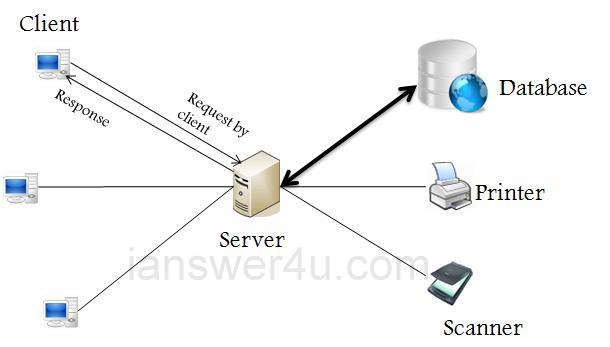

2018 MakeNTU 工作坊
3/25@三創11F
Created by MakeNTU Mentors
Slides Link
https://ntugeek.github.io/MakeNTU-2018-workshop/To export pdf:
- Click this link
- Print this page as pdf
Usage:
- Press "Space" to next page or action
- Press "Esc" to navigate
Mentor

沈昶劭
電機三
- 開發板(Arduino, RPi, Linkit...)
- 3D繪圖 & 列印
- Web(React), Android App
- DL with Tensorflow
Assumption
每組至少有一個人...
- 聽過Linux
- 會用Linux
- 聽過Raspberry Pi
- 會用Raspberry Pi
(ssh or serial連線, GPIO...)
今天要做的東西...
小車Againnnnn

小車Powered by...
Demo
它可以做的有...
Two modes
- Speech Mode
- CV Mode
Speech Mode
Requirements
- 聽聲音指令
- 左右轉 & 停止
CV Mode
CV = Curriculum Vitae?
Requirements
- 從相機看指令
- 左右轉 & 停止
How To??
HTTP 通訊協定
API
=Application Programming Interface
=黑盒子(?)
API Playground
Response

Server
- 定義API的URL(網址)
- 處理request，回應response
Client
- 對正確的URL發出request(GET, POST, ...)
- 處理response(直接顯示給user, 畫圖...)
Let's make it!!
系統架構
Setup
Car Setup
裝
Wiring
- RPi pinout
- Servo(pwm_pin: 18)
- MFRC522
- Motor with L293D(motor_pin: 23)
控制一個馬達即可，L293D其中一個input可接地 - webcam: 插USB
RPi setup
- 連上RPi@@
- 可參考此Reference
-
不過應該沒什麼用 - 所以請求助大腿or助教
API Setup
- Google Cloud Speech API(Do it on your local pc!!!)
- Azure CV API(等等會需要複製這個key)
TODO
Speech mode
CV mode
Appendix – Exercise
Simple Python server & client
Python Server with Flask
Setup
連上RPi@@